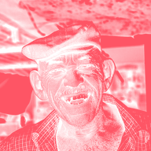

Luma-stempel

Maakt van de laag een egale kleur waarvan de dekking volgt hoe helder elke pixel is, zoals een stempel of stencil.
Instellingen
| Instelling | Type | Bereik | Standaard |
|---|---|---|---|
| Kleur | Kleur | – | #FF5566 |
| Zwartpunt | Getal | 0 tot 1 | 0.1 |
| Witpunt | Getal | 0 tot 1 | 0.6 |
| Gamma | Getal | 0.1 tot 10 | 1 |
| Omkeren | Aan of uit | – | Uit |
| Samenstelling | Keuze | Stempel, Tint | Stempel |